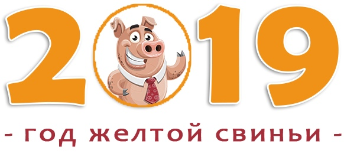

В преддверии Нового Года у каждого человека накапливается много важных
дел, среди которых вне сомнения лидирующую позицию занимает поиск
подарков для родных и близких людей.
Умение правильно выбрать и красиво преподнести подарок – целая наука, постигнув которую можно ощутить себя настоящим волшебником, который дарит людям радость, поднимает настроение и удивляет даже самых искушенных неординарностью презентов.
Желтый Кабан – большой ценитель комфорта, умеет и любит тратить деньги, но имеет неприкосновенный запас. Земляная Свинья хранит домашний уют, заботится о семье, следит за собой и всегда в курсе модных тенденций.
С выбором подарков придется постараться. Дежурные безделушки с точки зрения Свиньи – бесполезный хлам, передарки – признак скупости. Новогодние сюрпризы должны приносить эстетическое удовольствие и практическую пользу. Hодившимся в этот год будет приятно поздравление в любом виде. Они добрые и светлые натуры, которые больше любят дарить, чем получать презенты.